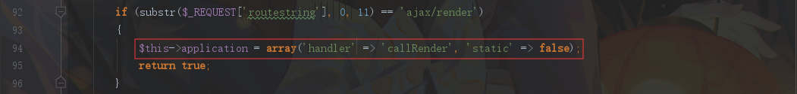

vBulletin 前台模板注入漏洞导致的RCE(CVE-2019-16759)
环境搭建
本地测试环境：Windows + phpStudy + Apache + php5.3.29
将网站根目录下的 config.php.bkp 重命名为 config.php 。将 webroot/core/includes/ 下的 config.php.new 重命名为 config.php ，并修改数据库部分配置信息：
1 | $config['Database']['dbname'] = 'vBulletin514'; |
修改完成后，访问 http://website/core/install/install.php 即可开始安装网站程序
漏洞复现
1 | POST /vBulletin-5.1.4/index.php HTTP/1.1 |
漏洞分析
从入口文件 index.php 开始跟进，当断点设置在如下图44行处时，发现代码已经执行，程序中断，说明漏洞可能与 vB5_Frontend_ApplicationLight 类有关。
将断点重新设置在35行处跟进，文件位置：/includes/vb5/frontend/applicationlight.php
首先 isQuickRoute 函数对请求参数 routestring 进行判断，开头为 ajax/render ，返回true。初始化类变量 $app ，其中置$this->application['handler'] = 'callRender';

然后执行 execute 方法，通过 call_user_func 函数调用了前面初始化 $this->application[‘handler’] 对应的 callRender 方法
callRender 方法中，通过 array_merge 函数把 $_POST 和 $_GET 数据合并到数据 $params 后，将 $params 和 $routeInfo[2] 作为参数传入 vB5_Template 类的 staticRenderAjax 方法中。 $routeInfo[2] 为widget_php
下图对应文件位置：vBulletin514/includes/vb5/template.php
调用了 staticRenderAjax 方法后，又调用了 staticRender 方法

在 staticRender 方法中，首先对传入的$data即$params进行 数组遍历 。然后逐一通过 register 方法进行注册
注册了 registered 属性后，回到 staticRender 方法，最后调用 render 方法
跟进 render 方法，代码非常多行，但是我们只需要把重点放在我们刚刚注册的 registered 属性即可
首先对 $this->registered 属性执行了extract变量覆盖操作。使用上面的 EXP 就会注册变量 $widgetConfig=array(“code”=>”system(‘whoami’);”)
然后程序来到272行处执行 getTemplate 方法，传入参数$this->template == 'widget_php'
跟进到最后发现从数据库中取模板代码，即 SELECT * FROM template WHERE templateid IN (406); 执行结果的 template 字段对应的值，然后将查询结果的$templateCode传入eval函数执行
render 方法处理流程图如下：
取出的模板内容作为参数全部传入eval函数执行，其中包含了这行关键代码：
1 | vB5_Template_Runtime::parseAction('bbcode', 'evalCode', $widgetConfig['code']); |
执行了 vB5_Template_Runtime 类的 parseAction 方法，参数中又之前进行变量覆盖的 $widgetConfig[‘code’] ，即我们 EXP 中要执行的代码：system('whoami');
最后执行代码的文件：/includes/vb5/template/runtime.php
最后调用了 vB5_Frontend_Controller_Bbcode 类的 evalCode 方法，执行命令，对应文件位置：/includes/vb5/fronted/controller/bbcode.php
漏洞总结
- 置 routestring 前半部分为：ajax/render/，执行 vB5_Frontend_ApplicationLight::callRender()
- 将 $_GET 和 $_POST 数据注册到 vB5_Template 类的 registered 属性中
- 在 vB5_Template 类的 Render 方法中进行 变量覆盖 和 数据库查询模板内容 的操作，变量覆盖 操作把 registered 属性覆盖为 $widgetConfig 变量。 数据库查询模板内容 把 widget_php 对应的 templateId(406) 的模板内容取出
- 通过@eval($templateCode) 执行模板内容。模板内容中执行 vB5_Template_Runtime 类的 parseAction 方法。parseAction 方法最后调用 vB5_Frontend_Controller_Bbcode 的 evalCode 方法，其中 eval函数执行了之前变量覆盖的变量 $widgetConfig[‘code’]